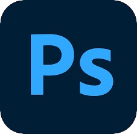
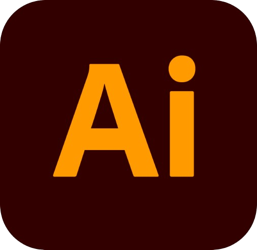

Compétences
| Nom | Niveau de compétences | Expérience |
|---|---|---|
| HTML |
Bonnes notions | Bases apprises dans le cursus de la spécialité NSI de mon lycée, l'HTML m'a tout de suite intéressé. Bases que j'ai pu approfondir lors de mon cursus à l'IUT du Havre dans le département informatique , à l'école mais encore lors de mon temps libre, à regarder des créateurs de contenus. |
| CSS |
Bonnes notions | De la même manière que l'HTML, j'ai pu découvrir le CSS au lycée, approfondir mes bases à l'IUT, à la NWS et lors de mon temps libre. Le CSS est mon langage informatique préféré car il mêle "design" et "création". |
| Java | Bonnes notions | Lors de mon année d'étude à l'IUT du Havre, le Java était la base de tout notre cursus scolaire. Effectivement, le principe même de l'établissement était de nous introduire à la création d'applications informatiques Le Java ainsi que l'algorithmie étaient donc les principales disciplines. |
| JavaScript |
Apprentissage | Après avoir eu des petites bases en JavaScript au lycée, j'avais complètement arrêté de pratiquer après l'obtention de mon bac. Cependant, avec la quantité de cours d'algorithmie ainsi que ma soif de devenir meilleur en Web m'a fait revenir sur ce langage de programmation. J'apprends donc de nouveau ce langage grâce à l'école mais également en autodidactie dans mon temps libre notamment sur OpenClassroom. |
| Photoshop | Apprentissage | Dans le cadre de ma formations en chef de projets digitaux à la NWS, Photoshop est un logiciel important. J'apprends donc à maîtriser cet outil dans mon temps libre en autodidactie mais également à l'école dans certains projets. |
| Illustrator | Apprentissage | À la manière de Photoshop, Illustrator est un outil clé dans la formation, et j'apprends à maîtriser ce logiciel à l'école mais également dans mon temps libre. |
| InDesign | Apprentissage | InDesign est un outil avec lequel j'ai pu réaliser mon CV lors d'un projet à l'école, et son interface est très intuitive. |